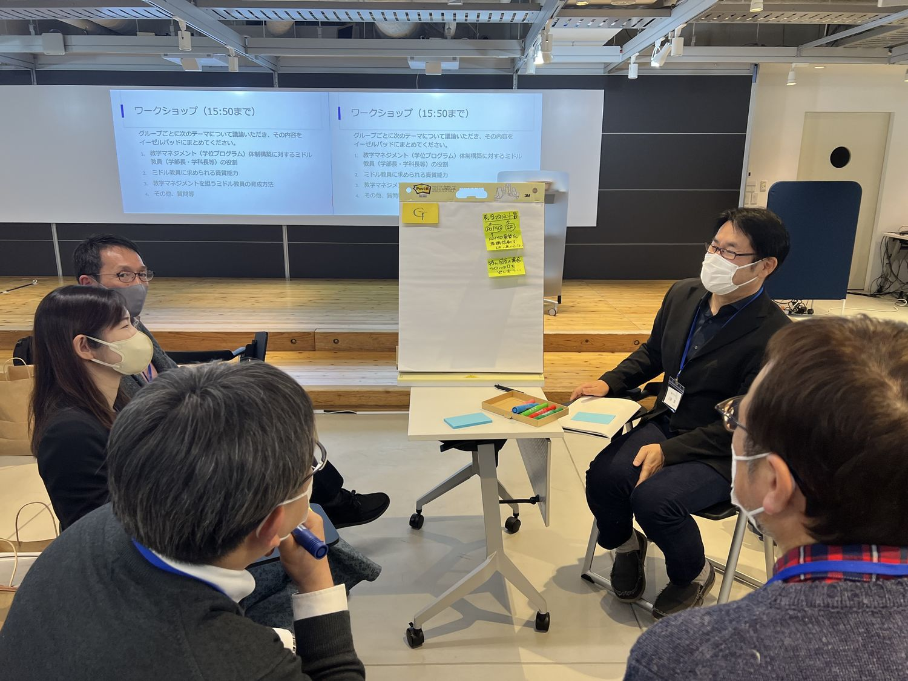
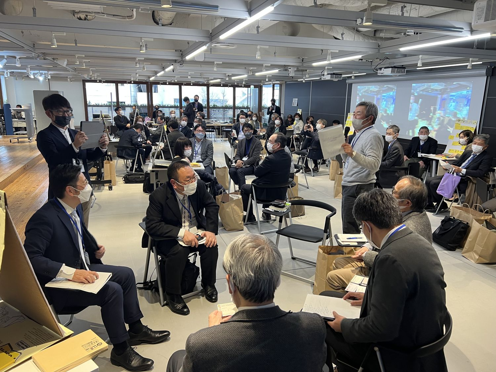
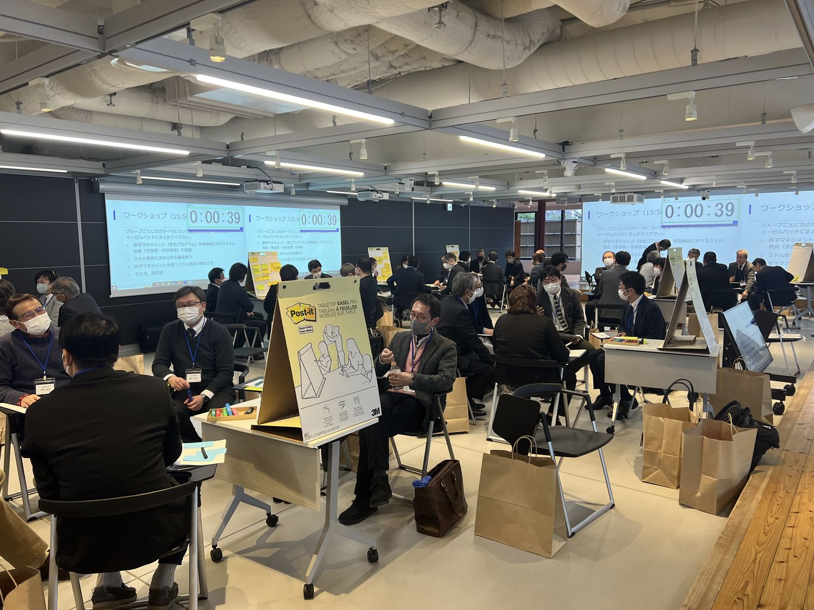

教学マネジメント体制構築に向けたミドル教員の役割
学位プログラムの現場の責任者である学部長・学科長をはじめとして、学長補佐やセンター長、プログラム主任など、様々なミドルマネジャー教員には、質の高い学位プログラムの設計や導入、学修成果の可視化、全学共通教養教育の再構築などに関してミドル・リーダーシップを発揮することが求められています。ミドルマネージャー教員にはどのような資質能力が求められるのか、その育成はどうすればよいのか。トップマネジメントからの提言とミドルマネジメント経験者の実践報告をもとに、参加者とともにワークショップを行いました。
MEDIA『教育学術新聞』2023年3月22日付（第2918号 4面）で紹介されました。紙面を見る（PDF）



開催概要
| 日時 | 2023年2月26日（日） 13:00〜16:30 |
|---|---|
| 会場 | 株式会社内田洋行 東京 ユビキタス協創広場 CANVAS（東京都中央区新川2-4-7） |
| 主催 | 大学リーダーシップ研究会 |
| 参加者 | 56名（一般参加48名／主催・事務局7名／登壇者1名） |
参加者数は、研究会が保有する第1〜9回の統合参加者データ（v13）にもとづく集計です。申込記録を基礎としているため、当日の実数とは若干の差がありえます。
登壇者とプログラム
- 基調講演大森 昭生共愛学園前橋国際大学・同短期大学部 学長「教学マネジメント・学位プログラムの質保証の観点から求められるミドルマネージャー教員の役割と課題」
- 特別講演榊原 暢久芝浦工業大学 教育イノベーション推進センター 教授「ミドルマネジャー教員としての実践とミドルマネージャー教員の育成支援について」
- 実践報告山本 啓一北陸大学 経済経営学部 教授「カリキュラム改革の設計と導入―DP達成に向けたスリムなカリキュラムをいかに導入するか―」
- 実践報告吉村 充功日本文理大学 教育推進センター長・学長室長「地域連携教育プログラムの設計と導入―全学方針と専門教育をいかにすり合わせるか―」
- 実践報告成田 秀夫山梨学院大学 学習・教育開発センター長「共通教育の設計と導入―共通教育センターの立場からいかにすすめるか―」
- ワークショップ参加者全員（8グループ）「ミドル教員の現状・課題・解決策」
開催報告
以下は、当日の発言録をもとに、各登壇者の発言の要旨をまとめたものです。引用部分は発言録からの抜粋です。
開会挨拶
山本 啓一（北陸大学）
山本が開会の挨拶をしました。参加者は全国から50名近くで、教員が56%、職員が12%、残りは民間企業などの方々でした。研究会は4名が中心になって発足したもので、2022年7月に学長のリーダーシップを取り上げたのに続き、今回はミドル教員のリーダーシップをテーマにしました。山本は、教学マネジメントが注目されるなかで、現場の責任者としてのミドル教員がいなければマネジメントはできず、トップとミドルのリーダーシップがかみ合わなければ全学的な動きは出てこないという認識が広がってきているように思うと述べました。あわせて、山本が代表を務める科研費研究のテーマもミドル教員の育成であることを紹介しました。
トップのリーダーシップとともにミドルのリーダーシップがうまくかみ合っていかないと全学的な動きって出てこないですよねという認識がだんだん広がってきているように思います。
山本 啓一
基調講演 大森 昭生
共愛学園前橋国際大学・同短期大学部 学長「教学マネジメント・学位プログラムの質保証の観点から求められるミドルマネージャー教員の役割と課題」
大森学長は、教学マネジメント指針の作成に関わった立場から、ミドル教員の役割を説明しました。2018年のグランドデザイン答申で学修者本位の教育への転換が示され、全学的な教学マネジメントの確立が求められるようになりました。指針では大学全体、学位プログラム、授業科目の三つのレベルが示されており、大森学長は、学位プログラムのレベルがミドルマネージャーの「本領発揮の場面」だと述べました。学長はビジョンを示せても、学生のカリキュラムに直接関わることは難しく、そこを担うのは学部長やセンター長などのミドルです。また、学生が身につけた資質能力を自覚し、自ら説明できるものが学修成果であり、大学が情報公表で示すのは教育成果だと区別しました。内部質保証については「大学の自治の最後の砦」と述べました。
続いて共愛学園前橋国際大学の体制が紹介されました。2人の副学長が教学マネジメントと内部質保証をそれぞれ担当し、学部長は教学マネジメント本部でカリキュラム編成を担っています。DPの達成に向けたカリキュラム改革では、2023年4月から専門科目を62単位から44単位に減らし、480あった科目を346科目に絞りました。最後に大森学長は、トップからミドルへの期待として三つを挙げました。第一に、大学のビジョンを共有し、それに沿って組織を動かす「ビジョナリー」であることです。誰を採用するかという人事もここに含まれます。第二に、専門外であっても高等教育について学ぶ「学習者」であること。第三に、学生に対する責任感を持ち、自分で判断し、課題には解決策を添えて提案することです。
この学位プログラムの目指す DP を保証していくのがミドルの先生方の一番の役割ということになると思います。
大森 昭生
実は学長をやっているとビジョンは示せても、なかなか直接学生たちのカリキュラムだとかプログラムには関われません。それはミドルの先生たちが音頭をとってやってくれてるんです。
大森 昭生
特別講演 榊原 暢久
芝浦工業大学 教育イノベーション推進センター 教授「ミドルマネジャー教員としての実践とミドルマネージャー教員の育成支援について」
榊原教授は、ミドル教員としての二つの実践と、ミドル層の育成支援について報告しました。芝浦工業大学は学生数1万人弱の理工系の大学で、2027年の創立100周年に向けて五つの目標を教職員が共有しています。一つ目の実践は、2010年から5〜6年かけて構築した新任教職員研修プログラムです。新任の教員は着任から3年以内に30時間程度の研修を受け、この15年ほどで全教員の7割以上が参加しました。同大学はこのプログラムをもとに、FD・SDに関する文部科学省の教育関係共同利用拠点に、私立大学で唯一認定されています。榊原教授は、研修を通じて学科や教員・職員の枠を超えたつながりができ、授業レベルのFDについて学内で共通言語を持てたと述べました。
二つ目の実践はカリキュラムマネジメントです。全学科が学科のDPを具体化した目標（mDP）を設定し、Webシラバス上で科目と対応づけ、整合性の確認を毎年続けています。学生はSITポートフォリオでmDPの達成状況を確認でき、振り返りを入力しなければ次の履修登録ができない設定にして、原則100%の入力を確保しています。ミドル層の育成支援では、2021年に新学長が就任し学部長・学科長が交代した機会に、ミドルマネジメント研修、愛媛大学と共催のカリキュラムコーディネーター養成講座、民間の教学マネジメント推進者養成講座への参加の機会を設けました。榊原教授は、これらの参加者が同大学の教学マネジメントを主導するキーメンバーになっていると述べました。
学部長、学科長、学部長室員の方々が、カリキュラム改定に必要な知識を求めていました。そこでその先生方に、拠点事業に絡めて研修の機会を設定しました。
榊原 暢久
共通理解という流れで言えば、ミドル層が高等教育の現状とか教学マネジメントにはどういうことが必要かということを共通理解することはとても大きいです。
榊原 暢久
実践報告1 山本 啓一
北陸大学 経済経営学部 教授「カリキュラム改革の設計と導入――DP達成に向けたスリムなカリキュラムをいかに導入するか」
山本は、九州国際大学法学部と北陸大学経済経営学部の学部長として、専門科目を半分近く減らしたカリキュラム改革の経験を報告しました。かつての学部長は「教員の代表」という意識がほぼすべてでしたが、教学マネジメント指針のもとでは、教員の代表、所属する学生の責任者、学位プログラムの責任者という三つの意識を持つ必要があると述べました。科目を減らすことに総論では賛成でも、自分の科目が減ることには反対する教員が多いため、山本はまず科目の多さに困っている教務課の職員の話を聞き、協働することを勧めました。進め方は、ゴールの明確化、プロセスの設計、パーツの設計、実行というファシリテーションの4つのステップと同じだと説明しました。
日本の学部長は、教員の代表という意識が 3 分の 1 で、3 分の 1 は学生の所属する学生の責任者という意識で、残りの 3 分の 1 がカリキュラム、学位プログラムの責任者だというこの 3 つの意識を持つことが大事になってくるなと思います。
山本 啓一
実践報告2 吉村 充功
日本文理大学 教育推進センター長・学長室長「地域連携教育プログラムの設計と導入――全学方針と専門教育をいかにすり合わせるか」
吉村先生は、2003年に基礎学力支援センター長となって以来、全学組織のミドルを務めてきた経験を報告しました。日本文理大学では理事長がトップで、学長もミドルにあたります。理事長の判断基準は、建学の精神に照らして学生の教育にとってどうかという一点です。吉村先生は学長室長として、トップと現場の言葉を互いに置き換えて伝えてきました。2014年に採択されたCOC事業では、学長室は体験交流、知識修得、PBLによる実践という3つのステップの仕組みだけを示し、専門の中身には踏み込みませんでした。教員の説得には、入学時の学生は社会貢献志向が高い一方で社会意識が低いというアセスメントの結果を用いたといいます。
我々全学組織のミドルの役割というのは、トップの人と現場の思いのすれ違いを調整していくことだと思います。
吉村 充功
実践報告3 成田 秀夫
山梨学院大学 学習・教育開発センター長「共通教育の設計と導入――共通教育センターの立場からいかにすすめるか」
成田先生は、山梨学院大学で教養教育・共通教育を担うセンター長の立場から報告しました。文系中心の大学では、DPが作られる以前からある科目が多く、とくに教養系の科目をDPとどう結びつけるかで科目担当者が戸惑うことを課題に挙げました。前任の大正大学では、初年次・教養・キャリア教育をトップダウンで一体的に見直しました。山梨学院大学では、DPを観察・評価できる行動のレベルまで具体化し、全学の共通言語にする作業を進めています。成田先生は、ミドルに必要なものとして、DPを学生も理解できる行動のレベルにつなげる「構想力」、学部とセンターのあいだのコミュニケーション、そして「繊細な鈍感力」を挙げました。
一つはこう上と下をつなげる「構想力」と書かせていただきましたが、DP で掲げていることとそれを行動レベルまでにうまく落として、学生も理解できるものにどうつなげていけるのかということも非常に重要かなと思っています。
成田 秀夫
ワークショップ
ファシリテーター：成田 秀夫

後半は、職域の近い参加者でつくった8グループに分かれ、成田先生が示した三つのテーマ（教学マネジメント体制の構築に向けたミドル教員の役割、ミドル教員に求められる資質能力、ミドル教員の育成）をもとに約1時間議論し、各グループが3分ずつ発表しました。学長が複数参加したグループからは、理念を共有できる教員を選んでチームをつくり、共通教育を再編した大学の例が報告されました。改革の方向を学長が直接説明する大学もあれば、学部長を通じた方が伝わる大学もあり、統一した正解はないという議論も紹介されました。ほかのグループからは、研究者である教員にチームプレーや教職協働を理解してもらう難しさ、ミドルがトップと現場の板挟みになる構造、教員評価が実質的に機能していないこと、資格取得を目的とする学科ではカリキュラムを変えにくいことなどが挙げられました。
ミドルの選び方と育て方も多くのグループで話題になりました。学部長などが選挙で選ばれる大学では職務に通じていない人が就くこともあり、将来ミドルになる人にどう経験を積ませるかが大きな問題として挙げられました。対策として、小さな単位で教職協働を経験する場をつくること、若手に全学的な会議や認証評価の委員を経験してもらうこと、学内の人材を把握し信頼できる職員とつながっておくことなどが提案されました。求められる資質としては、強いリーダーシップよりも、話を聞き、調整し、協働できるサーバント型のリーダーシップを挙げたグループもありました。
強いリーダーシップというより、「話を聞ける」とか「理解力がある」という、柔軟な、どちらかといえばサーバントなリーダーシップの印象で、それはある意味、資質や姿勢と言えるという話になりました。
グループの発表から
質疑応答
会場から、学生が学修成果を自覚して説明できるとはどういうことかという質問がありました。大森学長は、学生が自律的な学修者になることが目標だと答えました。共愛学園前橋国際大学では、学生がポートフォリオの記録をもとに「共愛12の力」のルーブリックで毎年自己評価し、教員とのリフレクション面談で評価を精緻化させています。そのポートフォリオを地元企業の特別採用ルートにつなげる仕組みも紹介されました。続いて、人文系の大学ではDPの考え方と学問観がかみ合わないという質問がありました。山本は、法学部の学部長を務めた経験から、学問分野ごとに教員の共感を得られる言葉を見つけることを挙げました。大森学長は、教学マネジメント指針が専門知識ではなく資質能力という表現をとっている点を、分野を超えた共通言語として挙げました。
先生方の琴線に触れる言葉を、学問分野によって異なる先生たちのメンタリティにフィットする言葉が見つけられるといいんじゃないかなと思うんですけど。
山本 啓一
閉会挨拶
吉村 充功（日本文理大学 教育推進センター長・学長室長）
吉村先生は、ミドルの定義は別として、ミドルに必要な資質能力については、大学のビジョンに基づく共感性、調整力、コミュニケーション能力という共通項が見えてきたのではないかと述べました。一方で、突然の指名か選挙かといった選ばれ方によって取れる対応が違うこと、ミドルを育成する場がほとんどないことを今後の課題に挙げました。あわせて、科研費の研究は3年計画の1年目で、山本が学部長の教科書を作ることが最大の目的だと紹介しました。続く議論の場として、2023年3月16日に京都大学の大学教育研究フォーラム（オンライン）で企画セッション「教学マネジメントにおける大学教育のミドルリーダーシップ」を開くことを案内しました。
2023年3月22日の『教育学術新聞』に記事が掲載されました。
参加者アンケートから
ミドルの役割が言語化されたことへの言及が中心です。「学部長は学生・教員・学位プログラムに責任を持つ」という整理が繰り返し現れます。教員と職員の双方がワークショップに参加したことを評価する記述も複数ありました。
| 研究会全体の満足度 | 4.72 | |
|---|---|---|
| 基調講演 大森 昭生 | 4.67 | |
| 特別講演 榊原 暢久 | 4.56 | |
| 事例報告1 山本 啓一 | 4.50 | |
| 事例報告2 吉村 充功 | 4.39 | |
| 事例報告3 成田 秀夫 | 4.33 | |
| ワークショップ | 4.61 | |
| シェア・質疑応答 | 4.17 | |
| 仕事との関連性・有用性 | 4.67 |
- ミドルの重要性を言語化できた点。
- 学部長は所属している学生、教員、学位プログラムに責任を持つということが明確になりました。
- 基調報告、特別講演、事例とインプットだけでなく、グループ討議の時間が十分に取られていたので学び多い会となったと思います。
参加者アンケートの回答は18件（回答率32.1%）です。満足度は5段階で、数値が大きいほど高い評価を示します。
資料
- 配布資料参加者向けに共有しています（掲載準備中）
- 発言録参加者向けに共有しています（掲載準備中）
- アンケート結果参加者向けに共有しています（掲載準備中）
本研究会はJSPS科研費 基盤研究(C)「教学マネジメントにおける学部長等のミドルリーダーシップ研究」（研究代表者：山本啓一）の助成を受けて開催しました。